Education
Columbia University
New York, NY
GPA: 4.00/4.00PhD Candidate in Electrical Engineering
Sep 2025 – PresentMS in Electrical Engineering
Sep 2025 – May 2025
Honors: Blavatnik Fellowship
Courses: VLSI Design Lab, mm-Wave IC Design, Power Management IC Design, Advanced Analog ICs, Analog-Digital Interfaces in VLSI, Microwave Circuit Design, MOS Transistors, Harsh Environment Electronics, TA for Digital VLSI

Northeastern University - B.S. in Electrical and Computer Engineering, Minor in Ethics
Sep 2021 – May 2025Boston, MA
GPA: 3.98/4.00
Honors: Honor's Program, Pelzer Scholarship, Dean's List
Courses: CMOS Analog IC Design, Electromagnetic Devices, Wireless Communication Circuits, Power Electronics
Experience
Graduate Student Researcher – Columbia University
Sep 2025 – Present
Undergraduate Research Assistant - Northeastern University
Mar 2022 – Jun 2025Energy Efficient Circuits and Systems Group. Researching methods for efficient wireless power transfer.
• Designed, laid out, and simulated a 2.4 GHz voltage-controlled ring oscillator using TSMC 65nm PDK
• Maximized wireless power delivery to energy harvesting ICs by using SDRs with GNU Radio to read an incoming
message and manipulate the phase shift of transmitted signals to constructively interfere when received
• Automated circuit testing using Python, MATLAB and SCPI commands, reducing testing time by up to 80%
• Utilized RF devices to test beamforming rectifier chips for and characterize path loss of electromagnetic signals
A. Mittal, Z. Xu, K. Du, S. S. Kumar and A. Shrivastava, "An Ultralow-Power Closed-Loop Distributed Beamforming Technique for Efficient Wireless Power Transfer," in IEEE Internet of Things Journal, vol. 11, no. 19, pp. 31301-31316, 1 Oct.1, 2024, doi: 10.1109/JIOT.2024.3416896.
Electronic Design Intern – Tesla
Jul 2024 – Dec 2024Battery Electronics Team. Circuit board design, test, and failure analysis for high voltage PCBAs.
• Designed an automated test system integrating custom PCBAs (Altium), firmware (C++), and software (Python)
to accelerate circuit board characterization and failure analysis
• Developed signal MUX circuits using compensation networks to maintain integrity up to 100 MHz
• Implemented design improvements to enhance performance, reliability, and cost-efficiency of analog circuits,
power electronics, and high speed communication on the high voltage controller PCBA
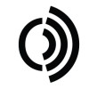
Electrical Engineering Co-op - Notch Technologies
May 2023 – Dec 2024Hardware and software design for steerable antenna systems.
• Designed modular control and power PCBs for electronically steerable antennas, prioritizing responsiveness
• Developed firmware and software to control antenna systems and packaged code into a distributed API
Chief Electrical Engineer, Project Lead - Generate Product Development
Sep 2023 – May 2025Product development for clients. Architected electrical systems, led workshops, and conducted design reviews.
• Led development for an autonomous robot detecting structural damage in parking garages by capturing and
processing acoustic data with microphones and amplifiers, then transmitting via Bluetooth
• Conducted workshops covering topics including PCB design, electronics, and communication protocols
• Designed circuits for sensing, actuation, and communication, including H-bridge drivers and audio amplifiers
Projects
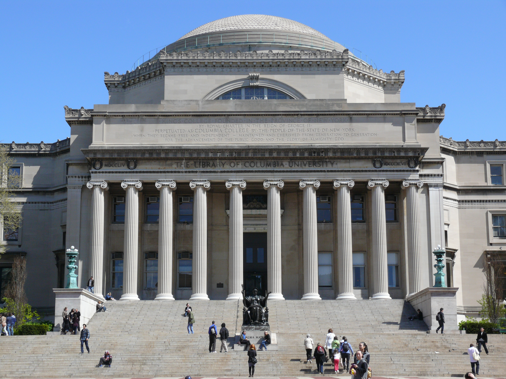
Course Projects
Notable Course Projects at Northeastern and Columbia.
• ELEN6320 - mm-Wave IC Design (Columbia University) - 60GHz Receiver. Designed and simulated a 60GHz front-end in Cadence Virtuoso using a 90nm PDK.
I was in charge of the LNA, and LO buffer design. Using a 2 stage LNA, I was able to achieve 2.45dB NF and 12.21dB gain, with good input and output matching at 50 Ohms (-18.16dB S11) and a current consumption of 18mA.
All the inductors for the project were designed and simulated in ADS, then imported to Cadence as n-port blocks.
Shown are the single-stage design (cascaded twice in final), and s-parameters.
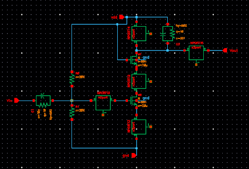
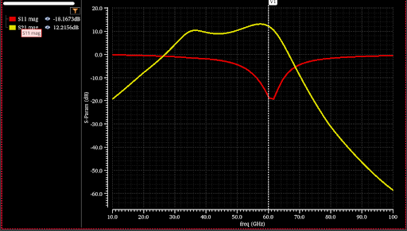
• ELEN6340 - Power Management ICs (Columbia University) - High Efficiency, High Power Buck Converter.
Designed a buck converter with Type III Compensation and 90% efficiency across 2-3A load conditions.
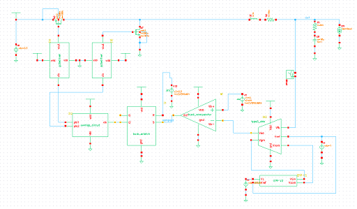
• EECE5649 - CMOS Analog IC Design (Northeastern University) - 1MHz 4th-Order Gm-C Biquad Low Pass Filter. The final result had 82uW of power consumption, and 0dB of passband gain.
• EECE4632 - Hardware-Software Codesign for FGPA-Based Systems (Northeastern University) - Real Time Guitar Pedal Effects on FPGA. Using Vitis HLS (based on C language),
implemented distortion, dynamic range compression, and wah effects. The most demanding of these was the the wah effect, which required implementation of an array FIR bandpass filters,
where a control signal indexed which to choose which filter to use.
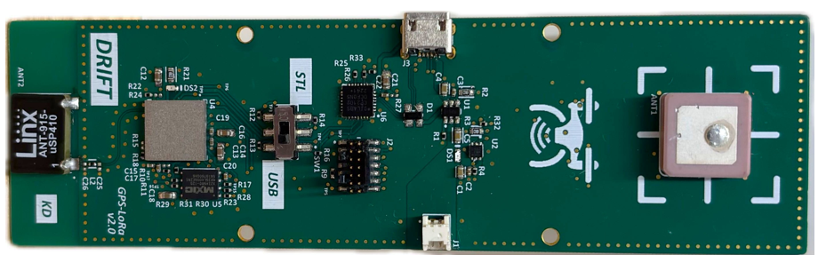
DRIFT - Senior Capstone
Drone for Real-Time Intelligent Following and Tracking.
DRIFT was a drone designed to deploy tracking units on high-speed vehicles, intended for aid in police chases.
The project was designed for Northeastern University's Senior Capstone Design competition, and we were awarded 1st place in Spring 2025.
The drone was constructed using mainly OTS components, and utilized computer vision (YOLO) to track and follow vehicles,
then following an approach algorithm, where a magnetic tracking unit was deployed to attach to a vehicle. The vehicle could then be monitored remotely over a LoRa interface.
️
My main responsibility for this project was designing our custom GPS tracking unit. The device included a GPS module with ceramic patch antenna, which would communicate data over I2C to the
MCU. The position data was then forwarded over LoRa via the on board chip antenna to a receiver unit, and data was passed over USB to a host computer, where location was displayed.
The device was designed to act as both transmitter and receiver, and included battery charging electronics, UART-USB conversion, and on board power conversion to support the main payload.
Once the board was designed, I took s-parameter measurements using a VNA, and optimized a matching network to guarantee LoRa efficiency.
All of the firmware for the device was written by me in C++, utilizing the STM32 HAL libraries.
The final version of the board was tested to have a range of greater than a
kilometer with clear line of sight (not tested until failure), but had some issues when the path was obstructed.
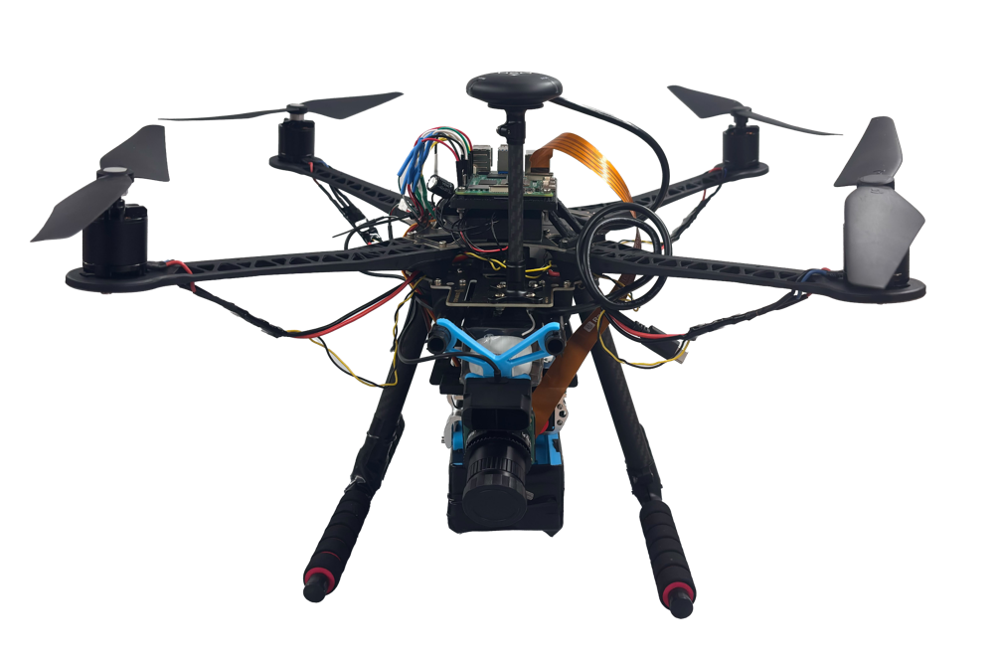
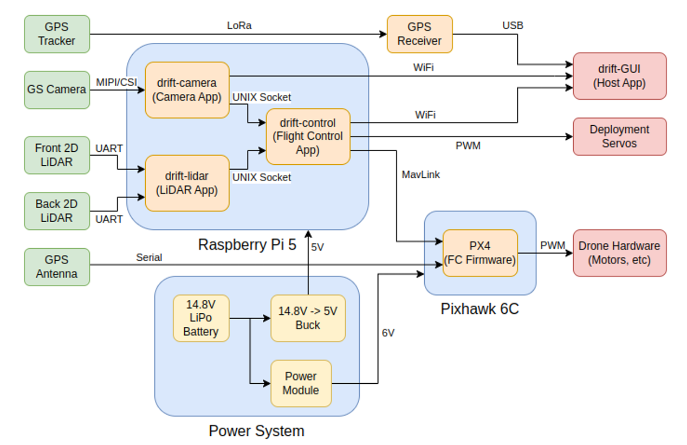
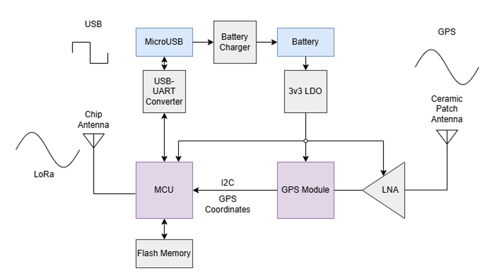
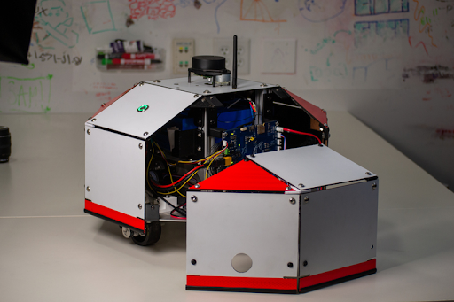
CSTAR - Generate Product Development
Concrete Sounding Tool Autonomous Robot
CSTAR is a robot designed to detect structural damages in concrete, namely parking structures, and was designed through Generate Product Development in spring of 2024.
The core functionality of the robot is the acoustic sensing systems, in which on board microphones capture the sound of a mechanical "sounding tool" attached to the bottom of the robot.
To keep any on board functionality lightweight, the audio data is simply forwarded over Bluetooth to a host, where the signal is processed (mainly by taking the fft and analyzing frequency).
As the robot should be autonomous, it utilizes LiDAR and ultrasonic sensors, using SLAM algorithms to navigate and avoid obstacles. The robot tracks its position, also trasmitting to the host
in order to create a map of structural integrity. The robot is battery powered and features on custom power electronics for regulation.
I was the Electrical Lead for this project. My role was architecting the electrical system, and overseeing all electronics and software design for this project.
As well, mentorship was a significant part of my role. Many team members were new to electornics and PCB design, so I taught these newer memebers the design process through this project.
This was one of my favorite projects to work on, both due to the novelty of the applicaiton, and a great team to collaborate with and mentor.
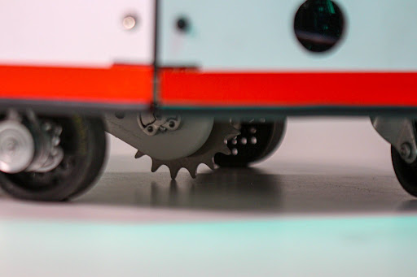
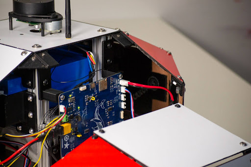
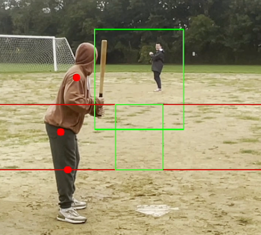
RoboUmp - Generate Product Development
Computer vision detection in baseball.
RoboUmp is an autonomous baseball umpire robot, designed to call balls and strikes using computer vision. The robot utilizes a camera to capture video of the pitcher and batter,
then processes the video using a YOLO model to detect the ball and its trajectory. Using this data, the robot determines whether the pitch was a ball or strike, and communicates the call
via audio and the on-board touchscreen.
I was the Project Lead for RoboUmp during the fall of 2023. My role was mainly organizational, planning for the team, communicating with the client, and ensuring seamless integration between teams.
This project taught me a lot about mechancal, electrical, and software integration, adn how to manage a large, multidisciplinary team.
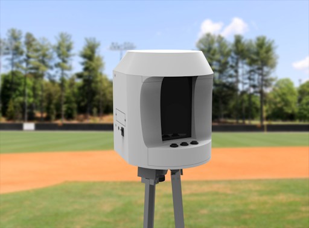
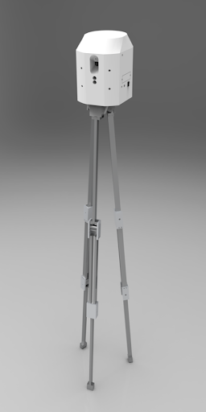
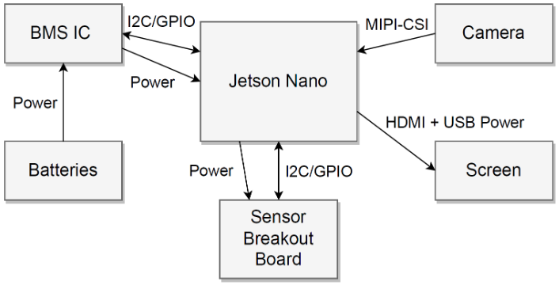